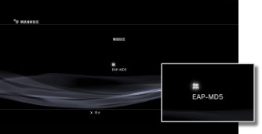
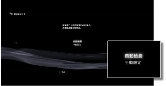
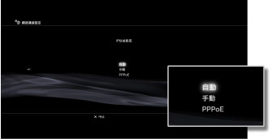
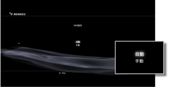
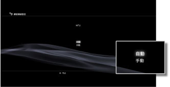
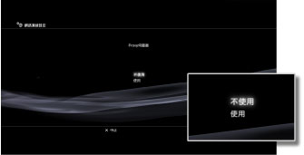
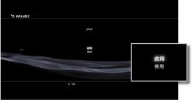

網路連線設定（進階設定）
經由標準設定卻無法與網路連線時，請配合需要變更設定。您可配合使用的網路環境，調整個別設定。
1. |
選擇 |
|---|---|
2. |
選擇［網路連線設定］。 |
3. |
選擇［自訂］。 |
 （設定）的
（設定）的 （網路設定）。
（網路設定）。連線方式
設定與網路的連線方式。此設定僅支援內建無線LAN機能的PS3™主機。

| 有線 | 使用LAN連接線有線連線。 |
|---|---|
| 無線 | 經由無線LAN無線連線。 |
無線LAN設定
設定Access Point（無線基地台）的SSID。此設定僅支援內建無線LAN機能的PS3™主機。

| 掃描 | 掃描附近的基地台。 不確認Access Point（無線基地台）的SSID時選擇此項目。掃描無線基地台後，會顯示SSID與安全性（加密）設定等資訊。 |
|---|---|
| 手動輸入 | 利用鍵盤直接輸入SSID，指定Access Point（無線基地台）。 已確認應輸入之SSID時選擇此項目。 |
| 基地台個別自動設定 | 使用Access Point（無線基地台）的自動設定機能。 僅適用對應區域之PS3™主機的設定。僅於使用支援自動設定之Access Point（無線基地台）時可選擇的設定。只要遵循畫面指示操作，即可自動完成必要的設定。Access Point（無線基地台）之支援與否，請詢問Access Point（無線基地台）的販賣廠商。 |
無線LAN加密設定
設定Access Point（無線基地台）的加密鍵。此設定僅支援內建無線LAN機能的PS3™主機。

| 無 | 不設定加密鍵。 |
|---|---|
| WEP | 設定加密鍵。 前往下一個畫面，輸入加密鍵。輸入的加密鍵會以［＊］顯示。 |
| WPA-PSK/WPA2-PSK |
驗證設定
僅適用韓國地區販售的PS3™主機。此設定僅支援內建無線LAN機能的PS3™主機。

| 無 | 不設定驗證資訊。 |
|---|---|
| EAP-MD5 | 設定使用公眾無線LAN服務時的驗證資訊。 前往下一個畫面，輸入用戶ID及密碼。詳細請參閱公眾無線LAN服務業者的資料等。 |
乙太網路啟動模式
設定乙太網路的通訊速度與啟動模式。通常請選擇［自動檢測］。

| 自動檢測 | 自動選擇標準設定。 |
|---|---|
| 手動設定 | 可手動設定乙太網路的通訊速度與啟動模式。 |
IP位址設定
設定與網路連線之IP位址的取得方式。

| 自動 | 使用DHCP伺服器分配的IP位址。 前往下一個畫面，可設定DHCP伺服器的hostname（主機名稱）。 |
|---|---|
| 手動 | 手動設定要使用的IP位址。 前往下一個畫面，設定IP位址、子網路遮罩、預設路由、Primary DNS、Secondary DNS等數值。 |
| PPPoE | 使用PPPoE與網路連線。 前往下一個畫面，設定用戶ID與密碼。 |
DHCP
設定DHCP Host Name（主機名稱）。通常選擇［不設定］。
| 不設定 | 不設定DHCP Host Name。 |
|---|---|
| 設定 | 設定DHCP Host Name。 |
DNS設定
設定要使用的DNS Server。

| 自動 | 自動取得DNS Server位址。 |
|---|---|
| 手動 | 手動輸入要使用之DNS Server位址。 |
MTU
設定使用資料通訊時的MTU數值。通常選擇［自動］。

| 自動 | 自動調整MTU數值。 |
|---|---|
| 手動 | 以byte（位元）為單位，指定Packet傳送的最高頻寬。 |
Proxy Server
設定要使用的Proxy Server。

| 不使用 | 不使用Proxy Server。 |
|---|---|
| 使用 | 使用Proxy Server。 前往下一個畫面，設定Proxy Server位址與Port碼。 |
UPnP
設定UPnP（Universal Plug and Play）的啟用／停用。通常選擇［有效］。

| 有效 | 將UPnP設定為有效。 |
|---|---|
| 無效 | 將UPnP設定為無效。 |
提示
選擇［無效］時，可能會於使用AV聊天或遊戲通訊機能等時候，限制與對方間的通訊。